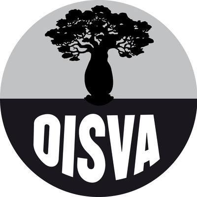

Moins de sel
Mesurez le sel dans chaque repas de la famille.

OISVA · CENEBLa journée mondiale du diabète, c’est tous les jours. Mesdames, la santé de la famille se joue à chaque repas, et c’est vous qui tenez la cuisine.
Lire l’appel aux femmesLe diabète et l’hypertension artérielle font partie des maladies non transmissibles. Elles avancent sans bruit, dans les villages comme au cœur des grandes villes, dans toutes les couches sociales.
Vous choisissez les repas, la quantité de sel et d’huile que consomme toute la famille. L’OISVA vous nomme ambassadrice permanente de la santé partagée.
Mesurez le sel dans chaque repas de la famille.
Réduisez l’huile dans la préparation quotidienne.
Un contrôle régulier permet d’agir à temps.
Parlez-en dans vos associations et organisations féminines.
Heure : 7H 00 · Lieu : CENEB à Bouaké · Contact : tel 27 31 60 82 42 / whatsapp +225 0503996243
OISVA, c’est vous, c’est nous : ensemble, sauvons des vies humaines.